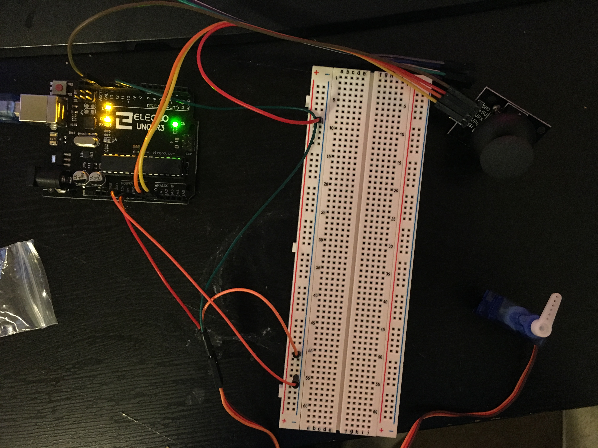
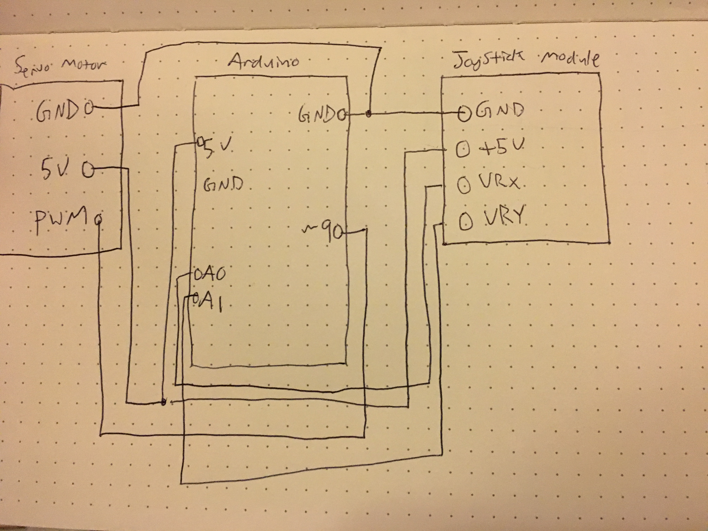
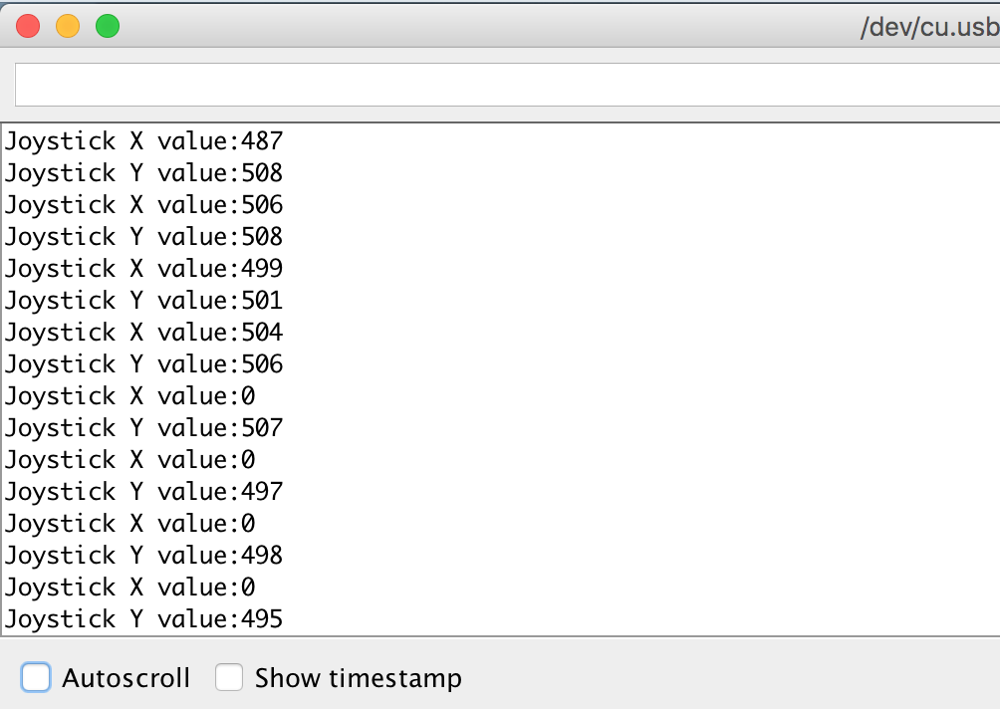

Garrett's Assignment 5 - Motors!
Schematic
Key parts of the schematic include: Arduino, Servo motor, Joystick module, and breadboard.
Circuit
The circuit's servo moves when the joystick is moved in the x position left or right. Arduino utilizes 5v, GND, ~9 pin for servo, and A0/A1 for joystick module.
Serial Monitor Readings
When moving the joystick left, the x value will go from 508 to 0, as seen in the serial monitor reading.

/*
* Garrett Mar
* HCDE 439
* A5: Motors
* Winter 2019
*/
//add servo library
#include <Servo.h>
//define servo motor variable
Servo servo1;
//initialize joystick x to pin A0
int joyX = A0;
//initialize joystick y to pin A1
int joyY = A1;
//initialize variable to map servo values
int servoVal;
//initialize variable to read x value of joystick
int servoValx;
//initialize variable to read y value of joystick
int servoValy;
void setup()
{
//attach servo to pin PWM 9
servo1.attach(9);
//initialize serial monitor at 9600 bps
Serial.begin(9600);
}
void loop()
{
//read the x value of joystick between 0-1023
servoValx = analogRead(joyX);
//read the y value of joystick between 0-1023
servoValy = analogRead(joyY);
//map servo value between 180-0(flipped so joystick and blade aren't inverse)
servoVal = map(servoValx, 0, 1023, 180, 0);
//set the servo position from joystick value
servo1.write(servoVal);
//print Joystick's X value in the serial monitor
Serial.print("Joystick X value:");
Serial.println(servoValx);
//print Joystick's Y value in the serial monitor
Serial.print("Joystick Y value:");
Serial.println(servoValy);
//delay serial monitor readings by 25 milliseconds
delay(25);
}
Operating Circuit
Here is an animated GIF of everything in action! When joystick is flicked right, the blade will turn right. When joystick if flicked left, the blade will turn left.